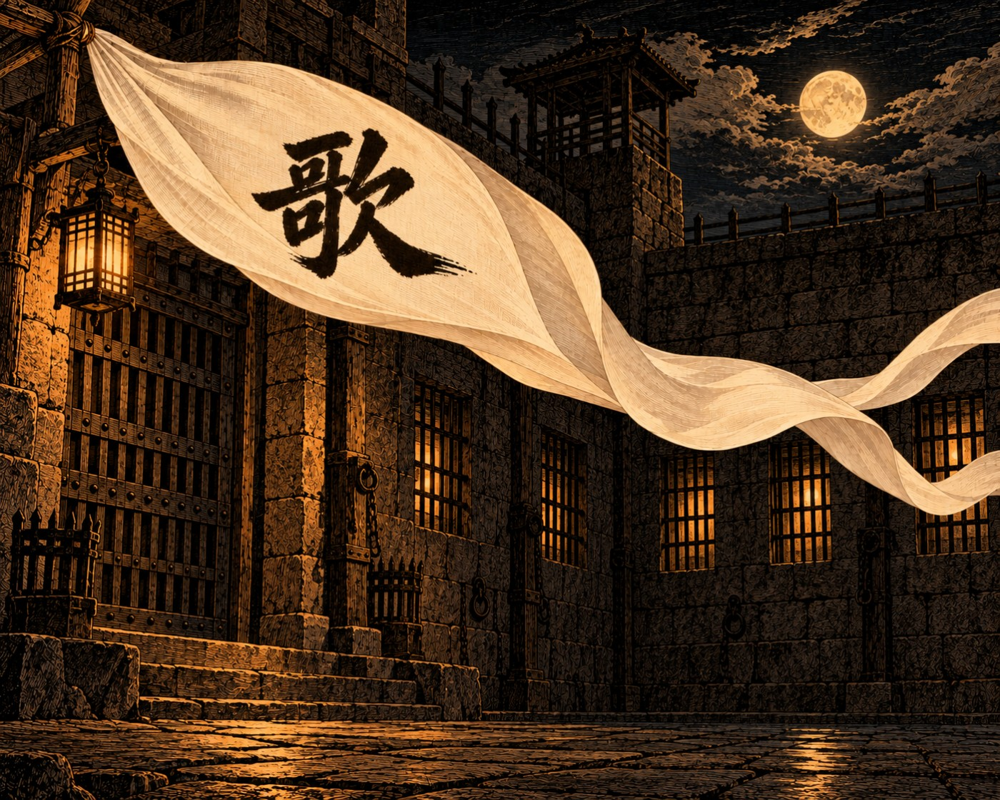

Вайчжуань XIII

Из ведомости ночного смотрителя старого корпуса городской тюрьмы.
Утро.
К осужденному переписчику допущен посетитель, следователь Управления Безупречной Гармонии. Основание: прошение осужденного, одобрено. Беседа продолжалась около часа. Содержание беседы смотрителю неизвестно.
Час Змеи.
В четвертой камере заключенный пел. Сделано замечание.
Час Змеи, позже.
Пели в четвертой и шестой камерах. Сделано замечание обоим.
Час Лошади.
Получено распоряжение: исполнение приговора переписчику перенесено на сегодня. Причина не указана. Печать подлинная.
Час Лошади, позже.
Пели в шести камерах из девяти. Наказывать некого, поскольку на вопрос, кто начал, каждый называет соседа.
Час Обезьяны.
Осужденный выведен. Шел сам. От повязки отказался, сказав, что она ему ни к чему.
Опись имущества осужденного.
Циновка казенная, одна.
Миска казенная, одна.
Халат собственный, один, ветхий.
Кисть для письма, одна, без туши.
Бумаг и книг не обнаружено.
Родственников не объявлено. Передать имущество некому.
Первая стража.
В корпусе тихо.
Третья стража.
Пели в женском корпусе, куда из старого корпуса ничего не слышно. Слова те же.
Четвертая стража.
Младший надзиратель Бо, обходя двор, насвистывал тот же мотив. На вопрос, откуда он его знает, ответил, что знал всегда.
Замечание не сделано. Записываю для порядка.